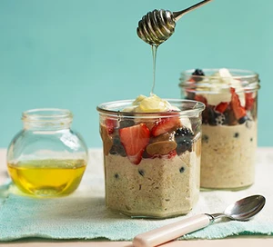

Overnight Oats

Adapt this recipe for easy overnight oats to suit your tastes. You can add dried fruit, seeds and nuts, grated apple or pear or chopped tropical fruits for the perfect healthy breakfast
Ingredients
- Ground cinnamon
- Rolled prridge oats
- Natural yogurt
- Mixed berries
- Honey
- Nut butter
Steps
- The night before serving, stir the cinnamon and 100ml water (or milk) into your oats with a pinch of salt.
- The next day, loosen with a little more water (or milk) if needed. Top with the yogurt, berries, a drizzle of honey and the nut butter.
- Enjoy!